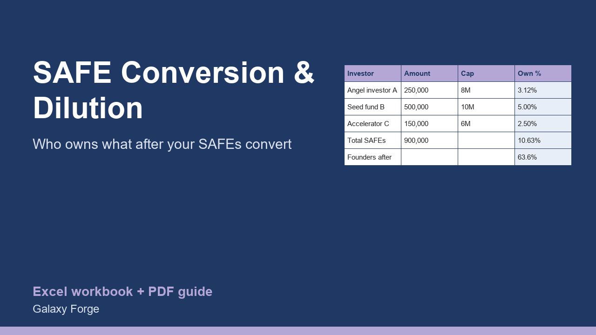

Enter your post-money SAFEs and the terms of the priced round; see how many shares each SAFE converts into, the round price per share, and who owns what afterwards.
Founders who raise on SAFEs often find out what they gave away only when the priced round arrives. Each post-money SAFE with a valuation cap buys a fixed share of the company as it stands just before the round, and several SAFEs together can take a larger slice than expected.
This calculator takes the shares and options you have, each post-money SAFE (amount and valuation cap) and the priced round (pre-money valuation and new money). It shows each SAFE's ownership at conversion, the shares each one receives, the round's price per share, the new investors' shares and everyone's ownership after the round.
It models post-money SAFEs with a valuation cap, the most common form used by US startups since 2018. The ownership each SAFE buys is its amount divided by its post-money cap, so the arithmetic is transparent and every number can be checked by hand.
1) On Settings, enter the common shares (founders and others) and the options granted plus the unissued pool, then the priced round's pre-money valuation and the new money raised. 2) On SAFEs, one row per SAFE: investor, amount and post-money valuation cap. 3) Read Summary: total SAFE ownership, shares issued to SAFE holders, price per share, and ownership after the round. If Status shows CHECK, the SAFEs together reach 100% and the inputs need correcting.
Price: $19, one-time. Download: safe_conversion_dilution_calculator.xlsx (Settings, SAFEs, Summary) and this guide. Works in Excel 2016 or later, Excel for Mac and Excel on the web; opens in Google Sheets and LibreOffice.
New product, listed 2026-10-29: no sales or reviews yet. Example figures in the workbook are illustrative.
This workbook is a modelling tool, not legal, tax or investment advice. Conversion depends on the exact wording of your SAFE documents and the priced round; confirm every figure with your lawyer before you sign or rely on it.